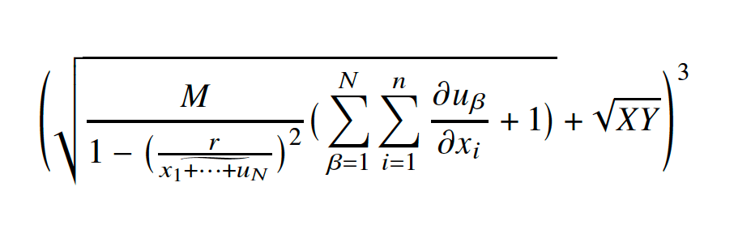
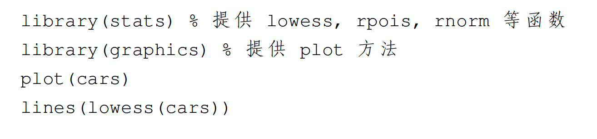
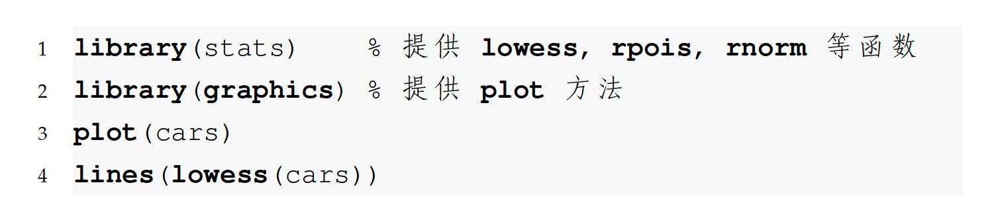

---
title: "R Markdown 入门"
author: "张三"
documentclass: article
output:
bookdown::pdf_book:
extra_dependencies:
ctex:
- UTF8
- heading=true
bm: null
toc: yes
template: null
base_format: rmarkdown::pdf_document
latex_engine: xelatex
number_sections: yes
mathspec: true
colorlinks: yes
classoptions: "b5paper"
---
# 线性模型 {#sec:lm}
第 \@ref(sec:lm) 节介绍线性模型，线性模型的矩阵表示见公式 \@ref(eq:lm) 。
```{=tex}
\begin{align}
\bm{\mathsf{y}} = \bm{\mathsf{X}}\bm{\beta} + \bm{\epsilon}
(\#eq:lm)
\end{align}
```17 PDF 文档
在国内外，有不少使用场景需要用到 LaTeX 排版，在期刊论文、毕业论文、毕业答辩、学术报告、课程作业、课程笔记、学术专著等科技写作方面，LaTeX 编辑的 PDF 文档。近 10 年来，可重复性研究成为一个热门的话题，不少权威期刊的投稿论文要求公开数据处理的过程，图表的生成代码等。走在前列的《R Journal》杂志，采用 R Markdown 投稿，整篇论文可以一键生成。经过 10 年的发展，R Markdown 生态已经比较成熟，为了进一步降低学习和使用的成本，基于 Pandoc ，Quarto 统一了论文排版，学术论文、演示报告等应用场景，提供一整套科技写作的解决方案。LaTeX 、R Markdown 和 Quarto 建立了紧密的联系，Pandoc 在其间起了非常重要的桥梁作用。Pandoc 将 Markdown 语法转为 LaTeX 语法，Pandoc 在 R Markdown 和 Quarto 中的作用类似。
17.1 LaTeX 基础
LaTeX 是一个非常方便用户使用的排版工具，提供一套精确的编程语言，下面是一个简单示例。短短 14 行代码展示了大量的常用功能，生成文章标题、作者、目录，设置文档布局、排版公式、交叉引用等。
\documentclass[b5paper]{article}
\usepackage[heading=true, UTF8]{ctex} % 设置中文环境
\usepackage{amsmath,bm} % 处理数学公式
\title{LaTeX 入门}
\author{张三}
\begin{document}
\maketitle
\tableofcontents
\section{线性模型} \label{sec:lm}
第 \ref{sec:lm} 节介绍线性模型，线性模型的矩阵表示见公式 \ref{eq:lm} 。
\begin{align} \label{eq:lm}
\bm{\mathsf{y}} = \bm{\mathsf{X}}\bm{\beta} + \bm{\epsilon}
\end{align}
\end{document}接下来，逐行解释上面的 LaTeX 代码。
-
\documentclass命令用来加载文类，常用的有 article、 report、 book 等，文类的选项 b5paper 表示布局为 B5 纸。 -
\usepackage命令用来加载 LaTeX 宏包，上面的第2行设置中文环境，加载了 ctex 宏包，并设置了两个选项heading=true和UTF8。 -
\title和\author命令分别用来设置文档标题和作者。\documentclass和\begin{document}之间的部分叫导言区，常常用来加载宏包和自定义 LaTeX 命令。\begin{document}和\end{document}之间的部分叫正文。 -
\maketitle和\tableofcontents命令分别用来生成标题和文档目录。\section命令设置小节的标题。\label命令设置小节标签，用于交叉引用。 -
\begin{align}和\end{align}是一个公式环境，其间的命令\bm来自 bm 宏包，用于加粗数学符号，命令\mathsf、\beta和\epsilon都来自 amsmath 宏包。 -
\begin{align}之后的命令\label{eq:lm}设置公式标签，eq:lm是用户指定的唯一标识符，不同公式不能重复使用同一标签，\ref{eq:lm}在正文中交叉引用公式。
所有的 LaTeX 命令都是以反斜杠 \ 开头的。文类和红包的选项说明可查看其帮助文档。
17.1.1 中英字体
大部分情况下，加载 ctex 宏包就够了，但也有的场景需要使用特定的中文字体，比如学位论文排版、项目申请书等，这些对文档格式有极其严格的要求。此时，可以在导言区使用 xecjk 宏包配置字体，或者加载 ctex 宏包时添加选项 fontset=none ，加载 ctex 宏包会自动加载 xecjk 宏包。
下面的代码表示在 LaTeX 文档里使用黑体、宋体、仿宋、楷体四款中文字体。正文字体是宋体，中文没有斜体，倾斜中文使用楷体，加粗中文使用黑体，等宽字体使用仿宋。
\setCJKmainfont[ItalicFont={KaiTi_GB2312}, BoldFont={SimHei}]{SimSun}
\setCJKsansfont{SimHei}
\setCJKmonofont{FangSong_GB2312}
% 黑体
\setCJKfamilyfont{heiti}{SimHei}
\newcommand{\heiti}{\CJKfamily{heiti}}
% 楷体 GB2312
\setCJKfamilyfont{kaishu}{KaiTi_GB2312}
\newcommand{\kaishu}{\CJKfamily{kaishu}}
% 宋体
\setCJKfamilyfont{songti}{SimSun}
\newcommand{\songti}{\CJKfamily{songti}}
% 仿宋 GB2312
\setCJKfamilyfont{fangsong}{FangSong_GB2312}
\newcommand{\fangsong}{\CJKfamily{fangsong}}LaTeX 提供很多字体宏包，支持英文字体、数学字体单独设定。在加载 amsmath 宏包后，加载 mathpazo 设置数学字体，加载 palatino 设置正文中的英文字体，加载 courier 设置代码中的等宽字体，加载 fontenc 设置字体编码方式。确保已安装 dvips 宏包，它用来处理字体文件。
17.1.2 数学公式
排版数学公式分三部分，其一是排版的环境，其二是使用的符号、其三是使用的字体。公式环境都是由成对的命令组成，前面已经提及 align 环境，这是一个可对公式编号的适用于对齐多行公式的排版环境。
| 可编号 | 无编号 | 作用 |
|---|---|---|
| align | align* | 多行公式对齐 |
| equation | equation* | 可与 split / cases 等环境嵌套使用 |
| multline | multline* | 长公式折行 |
| gather | gather* | 多行公式居中 |
不可编号的排版环境，行内公式排版，用一对美元符号 $ $或一对小括号 \( \)。行间公式排版，用一对双美元符号 $$ $$ 或一对中括号 \[ \] 。
LaTeX 支持丰富的数学符号大、小写英文字母，大、小写希腊字母，字母可以加粗、倾斜，字母也可以设置为等宽字体或衬线字体，还可以设置花体、空心体等。一些常用的数学符号样式见下表。
| 大写 | 小写 | 加粗 | 无衬线 |
| \(X\) | \(x\) | \(\boldsymbol{X}\) | \(\mathsf{X}\) |
| 衬线 | 花体 | 空心体 | 花体 |
| \(\mathrm{X}\) | \(\mathcal{X}\) | \(\mathbb{X}\) | \(\mathscr{X}\) |
| 大写 | 小写 | 加粗 | 无衬线 |
| \(\Gamma\) | \(\gamma\) | \(\boldsymbol{\gamma}\) | \(\mathsf{\Gamma}\) |
\[
\Bigg(\sqrt{\frac{M}{1 - \big(\frac{r}{\widetilde{x_1 + \cdots + u_N}} \big)^2}
\big(\sum_{\beta =1}^{N} \sum_{i=1}^{n}\frac{\partial u_{\beta}}{\partial x_i} + 1 \big) }
+ \sqrt{XY} \Bigg)^3
\]amsmath 宏包渲染效果如下：
\[ \Bigg(\sqrt{\frac{M}{1 - \big(\frac{r}{\widetilde{x_1 + \cdots + u_N}} \big)^2} \big(\sum_{\beta =1}^{N} \sum_{i=1}^{n}\frac{\partial u_{\beta}}{\partial x_i} + 1 \big) } + \sqrt{XY} \Bigg)^3 \]
newtxtext 和 newtxmath 宏包常组合在一起，提供一套 New Times 字体风格的文本和数学公式，一种介于。
\documentclass[b5paper]{article}
\usepackage{amsmath}
\usepackage{newtxtext,newtxmath}
\begin{document}
\[
\Bigg(\sqrt{\frac{M}{1 - \big(\frac{r}{\widetilde{x_1 + \cdots + u_N}} \big)^2}
\big(\sum_{\beta =1}^{N} \sum_{i=1}^{n}\frac{\partial u_{\beta}}{\partial x_i} + 1 \big) }
+ \sqrt{XY} \Bigg)^3
\]
\end{document}newtxmath 宏包渲染效果如下：

17.1.3 代码抄录
verbatim 环境是用来抄录代码的。
\begin{verbatim}
library(stats) % 提供 lowess, rpois, rnorm 等函数
library(graphics) % 提供 plot 方法
plot(cars)
lines(lowess(cars))
\end{verbatim}渲染出来的效果如下：

listings 宏包提供丰富的配置，下面在导言区设置代码字体样式和大小，代码块的背景、代码块的行号。
\usepackage{xcolor}
\definecolor{shadecolor}{rgb}{.97, .97, .97}
\usepackage{listings}
\lstset{
basicstyle=\ttfamily, % 代码是等宽字体
backgroundcolor=\color{shadecolor}, % 代码块的背景颜色
breaklines=true, % 可以段行
numbers=left, % 行序号
numberstyle=\footnotesize, % 行序号字体大小
commentstyle=\ttfamily % 注释是等宽字体
}启用 lstlisting 环境抄录代码，设置参数 language=R 指定抄录环境中的编程语言类型，以便提供语法高亮。
\begin{lstlisting}[language=R]
library(stats) % 提供 lowess, rpois, rnorm 等函数
library(graphics) % 提供 plot 方法
plot(cars)
lines(lowess(cars))
\end{lstlisting}渲染出来的效果如下：

17.1.4 插入图表
首先在导言区加载 graphicx 宏包，然后可以使用 \includegraphics 命令插入图片，该命令有一些选项，[width=.65\textwidth] 表示插入的图片占页面宽度的 65%。
在正文中 figure 环境是专门用来处理的图片，选项 [h] 表示将图片就插入此处，不要浮动。 center 环境将图片居中，\caption 和 \label 命令分别用来指定图片的标题和标签。
\begin{figure}[h]
\begin{center}
\includegraphics[width=.65\textwidth]{images/peaks.png}
\caption{图片的标题}
\label{fig:figure}
\end{center}
\end{figure}渲染效果如下
table 环境用于制作控制表格位置，tabular 用于制作表格，控制表头、每个列和每个格子。
\begin{table}[h!]
\begin{center}
\begin{tabular}{|c c c|}
\hline
列1 & 列2 & 列3 \\
\hline
1 & 6 & 77 \\
2 & 7 & 15 \\
3 & 8 & 44 \\
\hline
\end{tabular}
\caption{表格的标题}
\label{tbl:table}
\end{center}
\end{table}\begin{table}[h!] 表格环境中 [h!] 让表格不要浮动， center 环境使表格居中，\begin{tabular}{|c c c|} 表格各个列的元素居中，表格整体封闭， \hline 制作水平线，\\ 用于换行， & 用于表格格子对齐，\caption 添加表格的标题，\label 添加表格标识符，以便后续引用。
渲染出来的效果如下：
| 列 1 | 列 2 | 列 3 |
|---|---|---|
| 1 | 6 | 77 |
| 2 | 7 | 15 |
| 3 | 8 | 44 |
17.1.5 交叉引用
\ref 命令用于图、表、公式、章节的交叉引用，引用图片 \ref{fig:figure} 、引用表格 \ref{tbl:table} 、引用公式 \ref{eq:lm} 等。
\cite 命令用于参考文献的引用。
17.1.6 PDF-A/X
启用 PDF/X 或 PDF/A 标准，导言区加载 pdfx 宏包
示例文档内容如下：
\documentclass[b5paper]{article}
\usepackage{amsmath} % boldsymbol
\usepackage[a-1b]{pdfx}
\title{Math in LaTeX}
\author{Zhang San}
\begin{document}
\maketitle
\tableofcontents
\section{Math}
\begin{align}
\boldsymbol{x},\mathbf{x},\mathsf{x},x
\end{align}
\begin{verbatim}
require(stats) # for lowess, rpois, rnorm
require(graphics) # for plot methods
plot(cars)
lines(lowess(cars))
\end{verbatim}
\end{document}编译 LaTeX 文档的命令如下：
17.2 R Markdown 基础
17.2.1 中英字体
17.2.2 数学公式
17.2.3 代码抄录
17.2.4 插入图表
17.2.5 交叉引用
17.2.6 布局排版
---
title: "R Markdown 双栏排版"
subtitle: "副标题"
author: "张三"
date: "`r Sys.Date()`"
mathspec: yes
fontsize: 10pt
graphics: yes
lof: yes
geometry: margin=1.18in
output:
bookdown::pdf_book:
number_sections: yes
toc: yes
fig_crop: no
latex_engine: xelatex
base_format: rmarkdown::pdf_document
citation_package: natbib
template: null
extra_dependencies:
sourcecodepro:
- scale=0.85
ctex:
- heading=true
- fontset=fandol
caption:
- labelfont=bf
- singlelinecheck=off
- textfont=it
- justification=centering
Alegreya: null
keywords:
- 动态文档
- 双栏排版
subject: "可重复研究与动态文档"
abstract: |
这里是摘要内容
bibliography:
- packages.bib
biblio-style: plainnat
natbiboptions: "authoryear,round"
link-citations: true
colorlinks: true
classoption: "UTF8,a4paper,twocolumn"
---
```{r setup, include=FALSE}
knitr::opts_chunk$set(echo = TRUE)
```
# R Markdown
R Markdown 文档混合了代码、图形和文字内容[@rmarkdown]。
## 代码 {#sec:code}
```{r cars}
summary(cars)
```
## 插图 {#sec:plot}
```{r}
#| fig-iris,
#| fig.cap="鸢尾花数据集",
#| fig.width=5,
#| fig.height=4,
#| fig.showtext=TRUE,
#| out.width="95%",
#| echo=FALSE
library(ggplot2)
ggplot(iris, aes(Sepal.Length, Sepal.Width)) +
geom_point(aes(colour = Species)) +
scale_colour_brewer(palette = "Set1") +
labs(
title = "鸢尾花数据的散点图",
x = "萼片长度", y = "萼片宽度", colour = "鸢尾花类别",
caption = "鸢尾花数据集最早见于 Edgar Anderson (1935) "
)
```
# 参考文献 {#chap:refer}17.3 Quarto 基础
---
title: "Quarto 入门"
author: "张三"
lang: zh
format:
pdf:
include-in-header:
- text: |
\usepackage[heading=true,UTF8]{ctex}
\usepackage{amsmath,bm}
toc: true
mathspec: true
number-sections: true
colorlinks: true
documentclass: article
papersize: b5paper
---
# 线性模型 {#sec-lm}
@sec-lm 介绍线性模型，线性模型的矩阵表示见 @eq-lm 。
$$
\bm{\mathsf{y}} = \bm{\mathsf{X}}\bm{\beta} + \bm{\epsilon}
$$ {#eq-lm}17.3.1 中英字体
17.3.2 数学公式
17.3.3 代码抄录
17.3.4 插入图表
插入图片的语法是 {}，中括号内是插图标题，小括号内是插图存放路径，大括号内是插图的标识符和属性，比如 width="65%" 设置图片的宽度为页面宽度的 65%。
{#fig-quarto-figure width="65%"}渲染效果如下：
表格默认左对齐，冒号加虚线、虚线加冒号、虚线两侧加冒号分别对应左对齐、右对齐和居中对齐。
| Default | Left | Right | Center |
|---------|:-----|------:|:------:|
| 12 | 12 | 12 | 12 |
| 123 | 123 | 123 | 123 |
| 1 | 1 | 1 | 1 |
: 制作表格的管道语法 {#tbl-quarto-table}渲染效果如下：
| Default | Left | Right | Center |
|---|---|---|---|
| 12 | 12 | 12 | 12 |
| 123 | 123 | 123 | 123 |
| 1 | 1 | 1 | 1 |
17.3.5 交叉引用
@tbl-quarto-table 插入 表格 17.2 ，@fig-quarto-figure 插入 图 17.5 。引用表格的标识符前缀必须是 tbl，引用插图的标识符前缀必须是 fig，后以连字符连接其它内容。对比 LaTeX 文档中的图、表引用 \ref{fig:figure} ，Quarto 中的 @ 符号对应于命令 \ref 。值得注意，在 LaTeX 文档中，对标识符的命名没有这般要求，但为了区分引用内容，通常会加上不同的前缀。
17.4 Quarto beamer
Quarto 制作 beamer 幻灯片
---
title: "Quarto 幻灯片模版"
author:
- 张三
- 李四
institute:
- XX 大学
- XX 学院
date: today
date-format: long
documentclass: beamer
classoption:
- 11pt
- compress
- xcolor=x11names
- UTF8
lang: zh
format:
beamer:
theme: Singapore
fonttheme: structurebold
pdf-engine: lualatex
include-in-header:
text: |
\usecolortheme[named=SpringGreen4]{structure}
\usepackage[fontset=fandol]{ctex}
keep-tex: false
mathspec: true
toc: true
navigation: horizontal
latex-min-runs: 2
latex-auto-install: false
link-citations: true
---
# In the morning
## Getting up
- Turn off alarm
- Get out of bed
## Breakfast
- Eat eggs
- Drink coffee
# In the evening
## Dinner
- Eat spaghetti
- Drink wine
## Going to sleep
- Get in bed
- Count sheepPandoc’s Markdown 制作 beamer 幻灯片
---
title: "Quarto 幻灯片模版"
author:
- 张三
- 李四
institute:
- XX 大学
- XX 学院
mathspec: true
toc: true
toc-title: "目录"
---
# In the morning
## Getting up
- Turn off alarm
- Get out of bed
## Breakfast
- Eat eggs
- Drink coffee
# In the evening
## Dinner
- Eat spaghetti
- Drink wine
## Going to sleep
- Get in bed
- Count sheep将 Markdown 文档转化为 beamer 幻灯片的命令
pandoc --pdf-engine lualatex -t beamer \
--variable theme="Singapore" --variable fonttheme="structurebold" \
--variable classoption="xcolor=x11names" \
--variable header-includes="\usecolortheme[named=SpringGreen4]{structure}" \
--variable header-includes="\usepackage[fontset=fandol]{ctex}" \
-f markdown pandoc-beamer.md -o pandoc-beamer.pdf